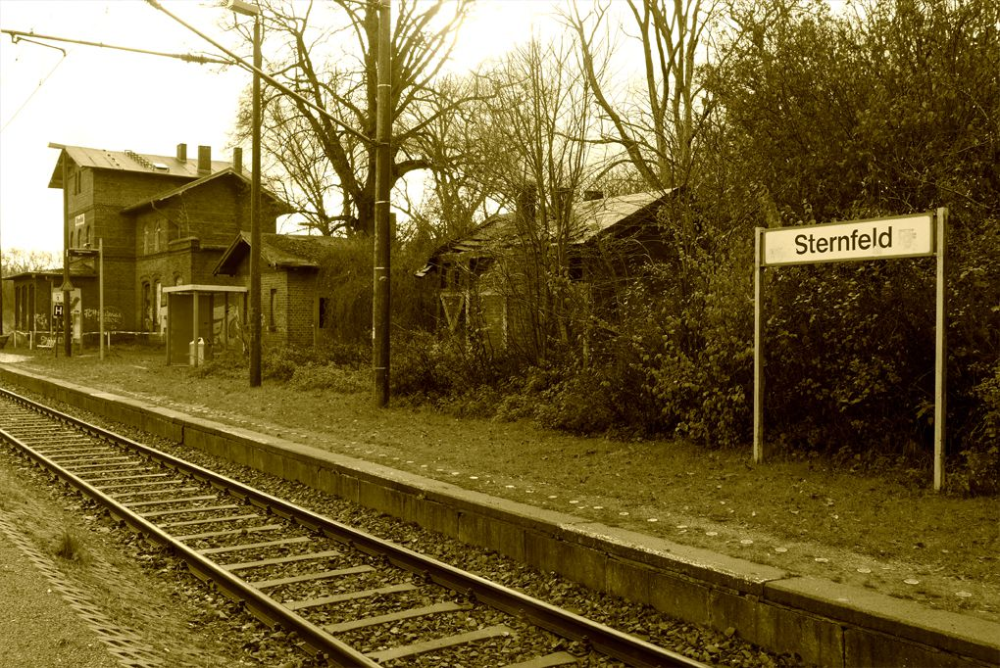

Sternfeld

Über Sternfeld zur Schlossanlage Broock
Die kleinen Bahnhöfe an der Nordbahn zw. Berlin und Stralsund sind inzwischen fast alle ruinös. Das unterscheidet sie nicht von leerstehenden Schlössern und Gutshäusern. Ungenutzt fallen sie alle früher oder später dem Vandalismus anheim. Natürliche Erosion dauert manchen einfach zu lange. Doch das Bahnhofsgebäude Sternfeld wurde inzwischen von der SCHLOSS BROOCK GmbH & Co. KG erworben. Sie will dort Empfangsräume für ihre Veranstaltungen auf der Broocker Schlossanlage und eine Wohnung einrichten. Der Ausbau soll im Frühjahr 2018 beginnen. Sie wollen die Empfangsräume auch Anderen aus der Umgebung zum Empfang ihrer Gäste und für kleinere Veranstaltungen anbieten. Die Wohnung im 1. OG und DG und der große Garten suchen auch einen Mieter. Vielleicht ergibt sich etwas. Tel. Baubüro Broock 03999 3766678 In ca. 2 Stunden von Berlin per Bahn zum zweiten Welcome Center für das Tollensetal klingt noch nach Zukunftsmusik. Abwarten..., aber für die Sicherung der Broocker Schlossanlage wurden schon Anträge bei den Denkmalpflegeinstitutionen eingereicht. Baugenehmigung, Statik etc. werden vorbereitet. Im Frühjahr nach der Bewilligung der Fördermittel soll es los gehen.